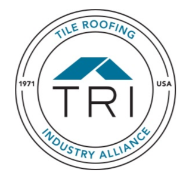
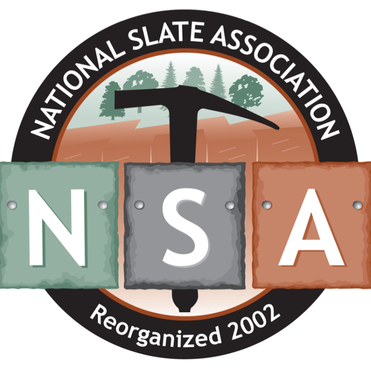
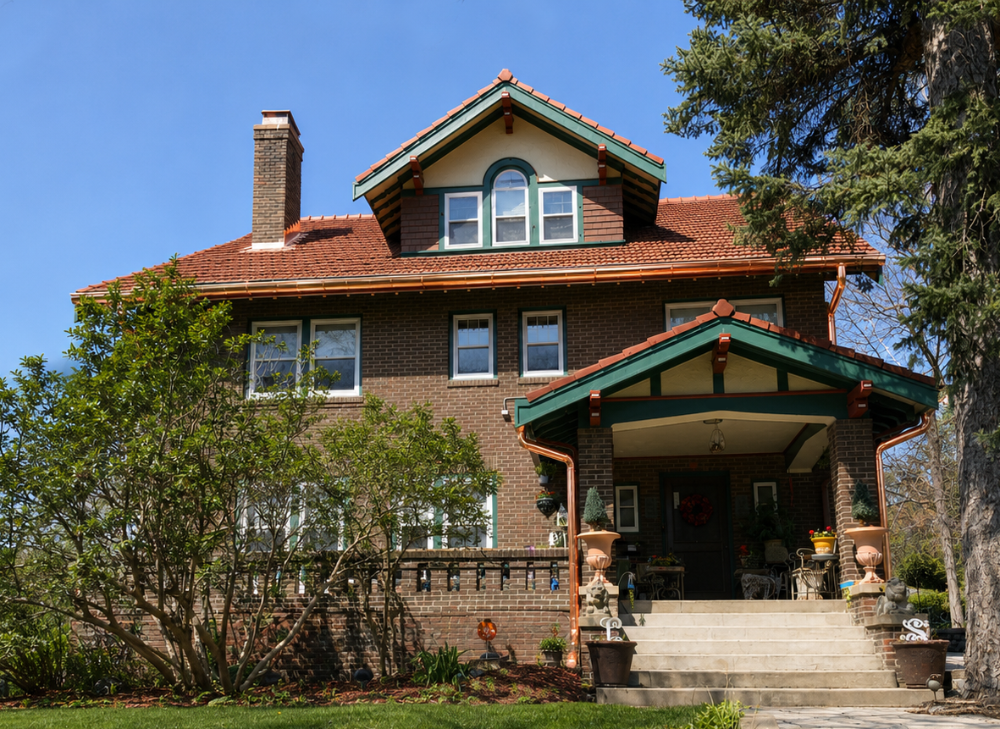
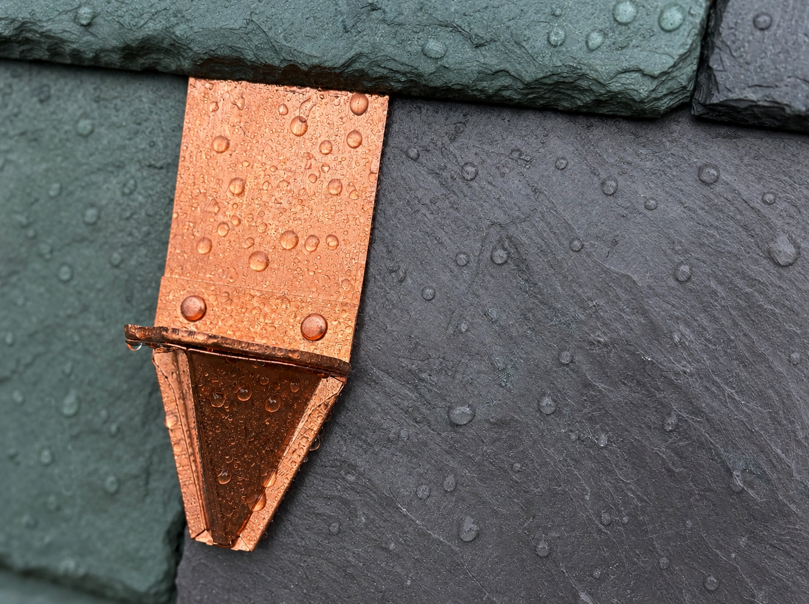

Historic Slate and Tile Roofing for Preservation-Grade Structures
We install and restore natural slate, clay tile, and period copper roof systems on historic and heritage-grade structures. All work follows preservation-qualified standards for materials, installation methods, and documentation.
Request a Project Review

What We Provide
-
01
Installation and restoration of natural slate, clay tile, and period copper roof systems. Replacement materials are sourced to match original quarry region, tile profile, and material thickness.
-
02
Training and certification through Ludowici FIT, TRI Alliance, the National Slate Association, and the Slate Roofing Contractors Association in the specific systems we install.
-
03
Copper flashings, valleys, gutters, chimney saddles, and ridgework fabricated on-site. Profiles and patina matched to existing historic metalwork wherever possible.
-
04
Historic and heritage-grade structures only. General residential, commercial, and new construction are not accepted. Each project is reviewed before scheduling.



Every Project Reviewed Before Acceptance
We confirm that each project qualifies under preservation or heritage-grade criteria before scheduling. Provide the building type, location, and required scope when you contact us.
Request a Project Review